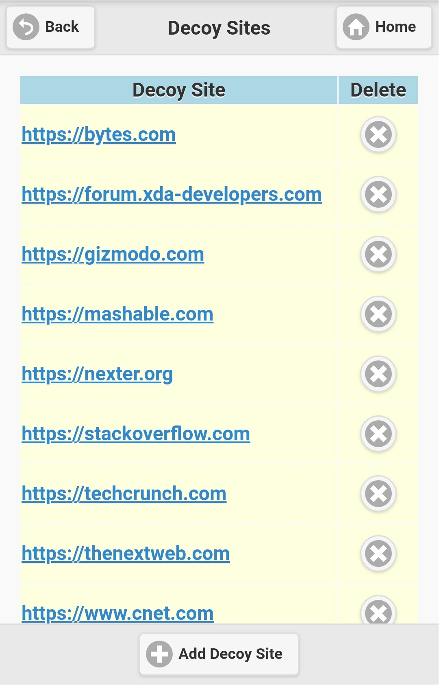
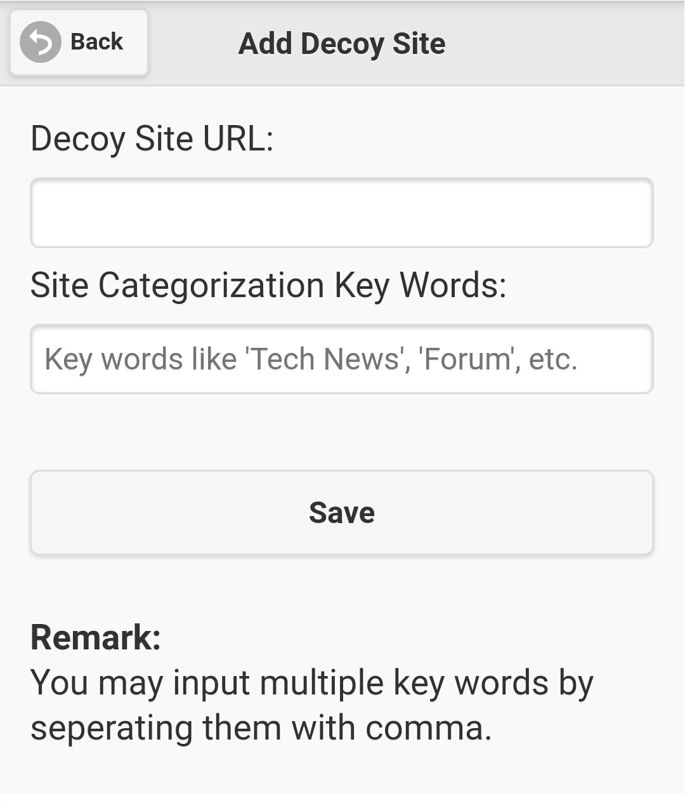
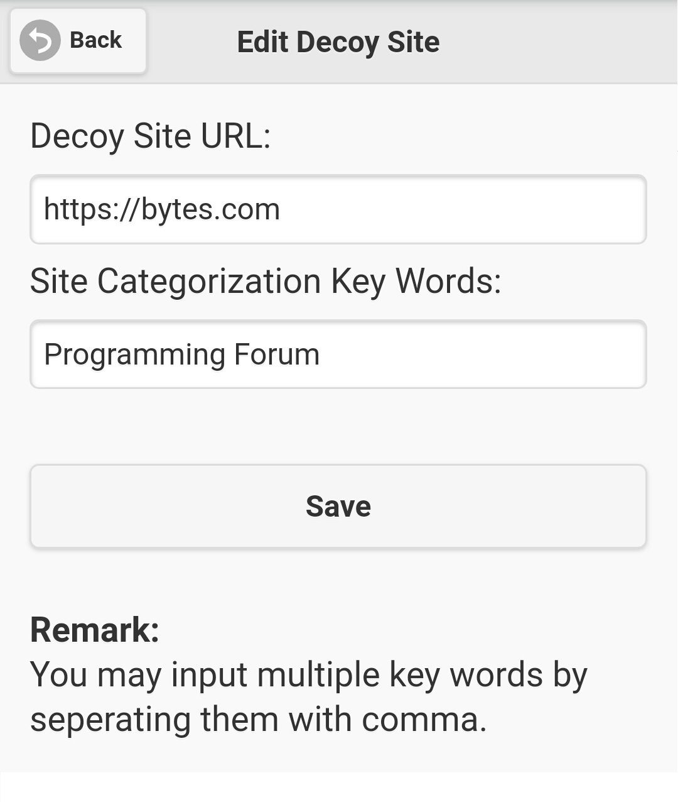

|
|
|
| 4.5.3 Decoy sites |
Decoy sites are used to obfuscate attackers and unfriendly agents to play game with them in following situations: (1) As attackers try to scan the
protected messaging site, the messaging site will redirect attackers to pre-defined decoy sites randomly to avoid them to obtain useful information
from the messaging site. (2) As SMS user logout, switch the web page to a randomly selected decoy site. (3) As someone click on a already used or
timeout messaging site access link, he/she will be switched to a randomly selected decoy site.
Please don't be misleaded by it's name and confused with the decoy login site, they are two different things.
To maintain decoy sites, select item 'System Settings' on main menu (figure 2.1.3), then click on the button 'Decoy Sites' (figure 4.5.1.1), screen
like figure 4.5.3.1 will be displayed to show you existing decoy site list.
|
| |

Figure 4.5.3.1 |
| |
|
If you want to add a new decoy site, click the button 'Add Decoy Site' on figure 4.5.3.1, screen like figure 4.5.3.2 will be seen. You could input
decoy site URL and site categorization key word(s) on it. Click on 'Save' button to add a new decoy site, then it will be switched back to the
decoy site list, and your newly added decoy site will be shown on the list.
|
| |

Figure 4.5.3.2 |
| |
To modify a decoy site, click on it's URL on the list, then screen like figure 4.5.3.3 will be displayed. Details of selected decoy site will be shown,
just modify it's data, and clicking the 'Save' button will update the selected decoy site.
To delete a decoy site, click cross icon on the 'Delete' column of selected decoy site in the list (figure 4.5.3.1), a dialog box will show up for you
to confirm the decoy site deletion. Clicking on 'OK' button will remove the selected decoy site.
|
| |

Figure 4.5.3.3 |
|
|
|

{kind=link}
{kind=link}
{kind=link}